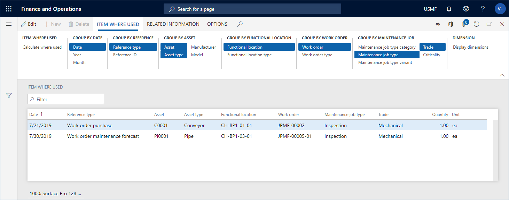

Artikelverwendungsort
Important
Dynamics 365 for Finance and Operations hat sich zu speziell entwickelten Anwendungen entwickelt, mit denen Sie bestimmte Geschäftsfunktionen verwalten können. Weitere Informationen zu diesen Änderungen finden Sie im Dynamics 365-Lizenzierungshandbuch.
Sie können eine Kalkulation für einen bestimmten Artikel durchführen, um sich einen Überblick zu verschaffen, wo in Asset Management der Artikel verwendet wurde. Die Ergebnisse zeigen den Kontext, in dem der Artikel während seiner Lebensdauer verwendet wurde. Die Seite Artikelverwendungsort kann vom Anlagenmanagement-Hauptmenü geöffnet werden, ist auch über die folgenden Seiten zugänglich:
Erstellen Sie eine Artikelverwendungsort-Berechnung
Klicken Sie Anlagenverwaltungsparameter > Abfragen > Artikelverwendungsort, oder wählen Sie die Schaltfläche Artikelverwendungsort auf einer der Seiten aus, die oben genannten werden.
Im Dialogfeld Artikelverwendungsort wählen Sie den Artikel aus, für den Sie die Berechnung im Feld Artikelnummer vornehmen wollen.
Sie können das Feld Ebene verwenden, um anzugeben, wie detailliert die Artikelpositionen bezüglich funktionaler Standorte sein sollen.
Wenn Sie z.B. die Nummer „1“ in das Feld einfügen und eine funktionale Standortstruktur auf mehreren Ebenen haben, werden auf der obersten Ebene alle Artikelpositionen zu einem funktionalen Standort angezeigt. Daher kann die Relation/Menge auf einer Position von funktionalen Standorten auf einer niedrigeren Ebene summiert werden.
Wenn Sie die Zahl „0“ im Feld Ebene eingeben, wird ein detailliertes Ergebnis mit allen Artikelpositionen für alle funktionalen Standortebenen angezeigt, denen sie zugeordnet sind.
Wählen Sie im Abschnitt Einbeziehen „Ja“ auf den Umschaltflächen aus, die Sie in die Berechnung einbeziehen möchten.
Klicken Sie auf OK, um die Berechnung zu starten.
Wählen Sie auf der Registerkarte Artikelverwendungsort die Gruppieren nach…-Schaltflächen aus, um die erforderliche Detailebene der Berechnung anzuzeigen. Die ausgewählten Gruppieren nach…-Schaltflächen werden hervorgehoben. Klicken Sie auf eine Schaltfläche, um sie zu aktivieren oder zu deaktivieren.
Wenn Sie die Dimensionen anzeigen möchten, die dem Artikel zugeordnet werden, klicken Sie auf Dimensionen anzeigen und wählen die Dimensionen aus, die angezeigt werden sollen.
Beispiel
Im nachfolgenden Screenshot finden Sie ein Beispiel für eine Artikelverwendungsort-Berechnung für Artikelnummer „1000“.
